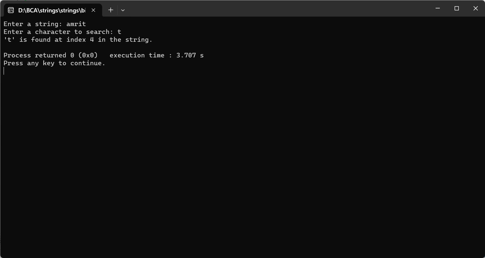

ENTER THE STRING FROM THE USER, ENTER A CHARACTER ALSO AND SEARCH THE CHARACTER IN THE STRING
#include
int main() {
char inputString[1000];
char searchChar;
int found = 0;
printf("Enter a string: ");
fgets(inputString, sizeof(inputString), stdin);
printf("Enter a character to search: ");
scanf(" %c", &searchChar); // Space before %c is used to skip whitespaces or newline characters
// Search for the character in the string
for (int i = 0; inputString[i] != '\0'; i++) {
if (inputString[i] == searchChar) {
found = 1;
printf("'%c' is found at index %d in the string.\n", searchChar, i);
break;
}
}
if (!found) {
printf("'%c' is not found in the string.\n", searchChar);
}
return 0;
}
